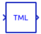
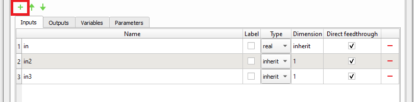
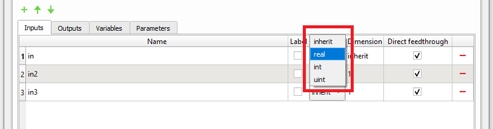
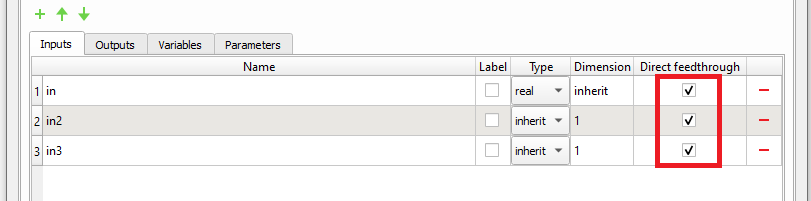
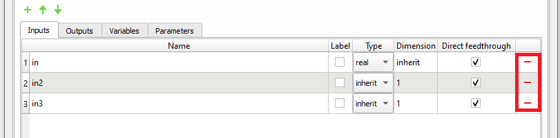
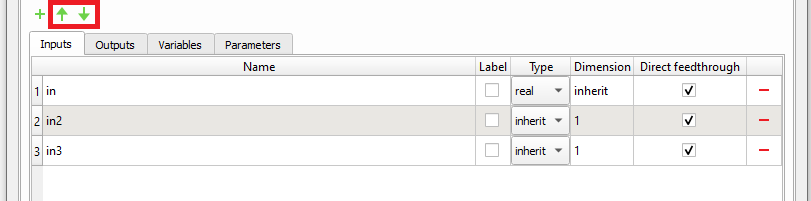
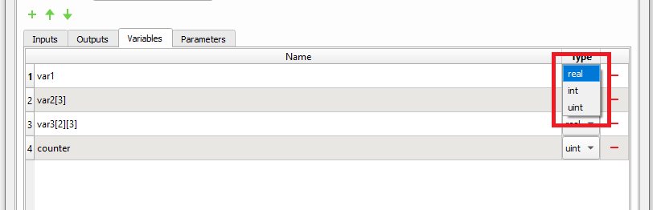
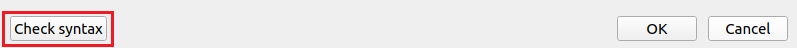

TML function
Description of the TML function component in Schematic Editor, which enables writing functions using the TML (Typhoon Modeling Language) programming language.
Component Icon

Description
The TML function component allows you to implement a component with an arbitrary function using the TML programming language.
Like any other Signal Processing component, TML function consists of inputs, outputs and functions that define the functionality of the block. This section explains in detail the options which are available for configuring the TML function component in each of its tabs and sub-tabs.
General tab
In this tab, you can define the general properties of the TML function component. The tab is divided into four sub-tabs for configuring parameters:
Inputs and Outputs
Input and output terminals are defined inside the Inputs and Outputs tabs, respectively.
To add a new terminal to the TML Function component, simply click the green plus-sign button for adding a new element to the table (Figure 2).
Terminal name
Every terminal on the component must have a unique name. When a new terminal is added, its name is set automatically. To rename the terminal, double-click the name you want to change and type in a new name.
When naming a terminal, it is important to follow these two rules:
- the Name column cannot be empty;
- Name cannot contain spaces.

Type
You can use the Type column to define the terminal’s signal type. The signal type can be set to the following four values (Figure 3):
- inherit,
- real,
- int, and
- uint.

The signal value type inherit has different meanings for input and output terminals.
If the signal type of an input terminal is set to inherit, then the terminal will inherit the signal type from the terminal that is connected to it.
If the signal type of an output terminal is set to inherit, then the signal type of the terminal will be determined by the internal rule.
The values real, int and uint are used to explicitly set a signal type to the terminal. If the signal type of the input terminal is set explicitly, only a terminal with the same signal type can be connected to it.
For further information about signal data types, please refer to the Signal types documentation.
Dimension
You can use the Dimension column to define the terminal’s signal dimension. The signal dimension can be either inherit or an integer number (e.g., 1). Similarly to the signal value type, the signal value dimension inherit has different meanings for input and output terminals.
If the signal dimension of an input terminal is set to inherit, then the terminal will inherit the signal dimension from the terminal that is connected to it.
If the signal dimension of an output terminal is set to inherit, then the terminal will inherit the signal dimension from an input terminal with the largest signal dimension.
Direct feedthrough
The Direct feedthrough column (Figure 4) contains a checkbox which determines whether the terminal is a direct feedthrough terminal or not.
If a terminal is defined as direct feedthrough, it means that its current value determines the current value of one of the component's outputs.
Depending if the input and/or output terminals are set as direct feedthrough or not, certain rules should be followed when writing TML code to ensure the compilation passes and simulation results are valid. For these rules, please see Rules for writing TML code.
For further information about direct feedthrough terminals, please refer to the Component Sorting and Algebraic loops documentation.

Terminal removal
To remove a terminal, simply click the red minus-sign button (Figure 5) in the row of the terminal you want to remove and then click OK.

Terminal reordering
To reorder terminals, first select rows of terminals you want to move and then simply click either the up-arrow-sign or the down-arrow-sign.

Global variables
Global variables are accessible from every component’s function. Values of global variables are preserved among different function calls.
Variable name
Terminal naming rules defined in section Terminal name must be also applied for naming global variables.
Variable type
You can use the Type column to define a global variable’s signal type. The signal type can be set to real, int, or uint (Figure 7).
For more information about signal data types, please take a look at the Signal types documentation.
Vectors and matrices
Global variables can also be defined as a vectors and matrices. A size of a vector or a matrix must be defined statically in square brackets as part of the variable name, as shown on the left side of Figure 7 for the var2 and var3 variables.

Variable removal
Variables are removed in the same way as the terminals (please, see the section Terminal removal).
Arbitrary definitions
This section allows arbitrary definitions of variables and function which are supported by the TML language.
Parameters
Parameters allow you to pass external variables into the TML function component. These external variables are propagated through the namespace into the TML function.
To make an external variable visible within the TML function component, you must declare it inside the parameters table (Figure 7), otherwise an error will be raised.
Parameters can be accessed inside the component’s functions in the same way as the global variables are accessed.
Parameter name
Terminal naming rules defined previously in the "Terminal name" section must also be applied.
Parameter type
You can use the Type column to define a parameter’s signal type. The signal type can be set to: real, int and uint.
For further information about signal data types, please refer to the Signal types documentation.
Parameter removal
Variables are removed in the same way as the terminals (please, see the section Inputs and outputs).
Using Python iterables to initialize TML tensors
If a parameter is defined as a Python iterable (list, set, or tuple), it will be automatically converted into a TML tensor initializer.
Functions tab
The Functions tab allows you to define arbitrary init_fnc, output_fnc and update_fnc functions.
Once you implement the functions, you can check if the code is syntactically correct by pressing the Check syntax button (Figure 8).

If the code is syntactically correct, you will get the No errors found message, otherwise the Code validator dialog will be shown. Every error message inside the Code validator dialog has a header and content. If you click on the header, you will be automatically redirected to the function that caused an error. Basic limited semantic analysis is also performed for TML code. Model scope values which are unresolved (like terminals of type inherit and namespace variables) are ignored, while the rest of the code is checked.
TML has its own library of mathematical functions similar to C and Matlab, but with native support for tensor types. For more details, consult TML documentation.
Rules for writing TML code
TML documentation lists detailed rules of the language with plenty of examples. Please consult the TML documentation for TML-specific rules. Basic rules related to writing TML code inside the TML function dialog are:
- Entry functions are automatically surrounded with TML syntax for function definition. Only function logic code of entry functions should be written.
- Arbitrary user functions can be declared in Arbitrary definitions, but their names must be distinct from those of entry functions.
- Names of state variables declared using dialog and using Arbitrary definitions must not overlap.
- Names of state variables and user functions must not overlap.